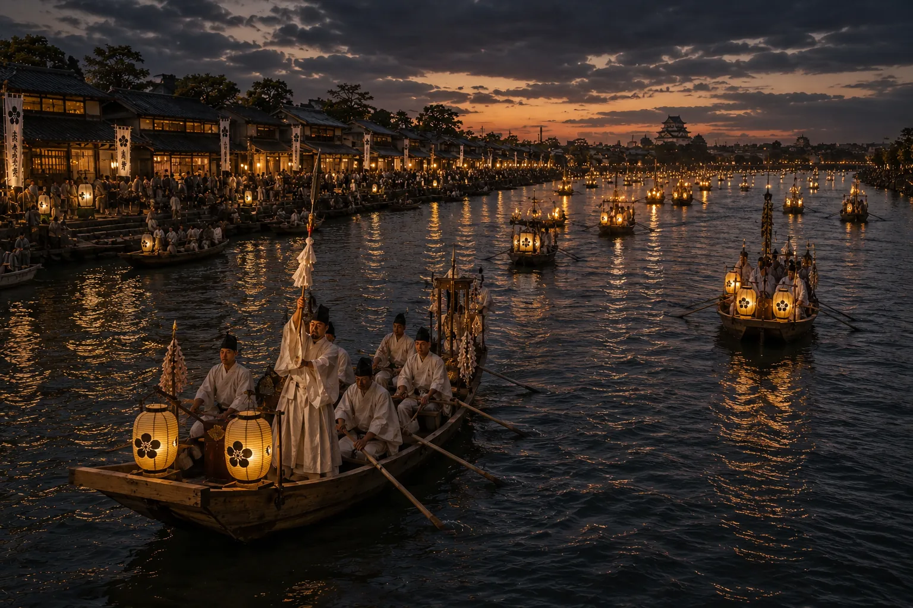
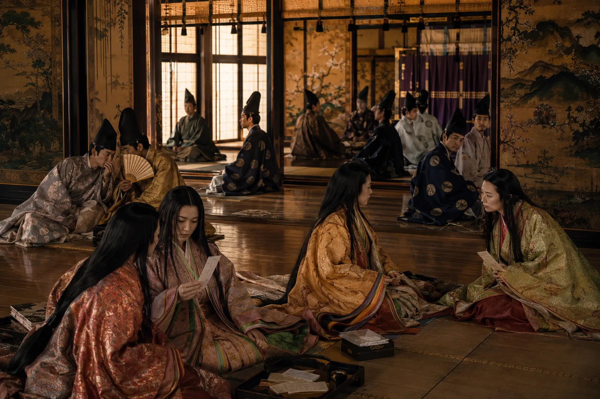
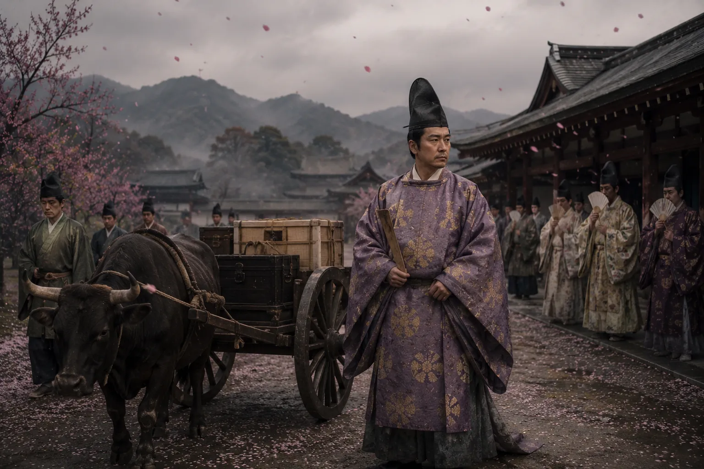
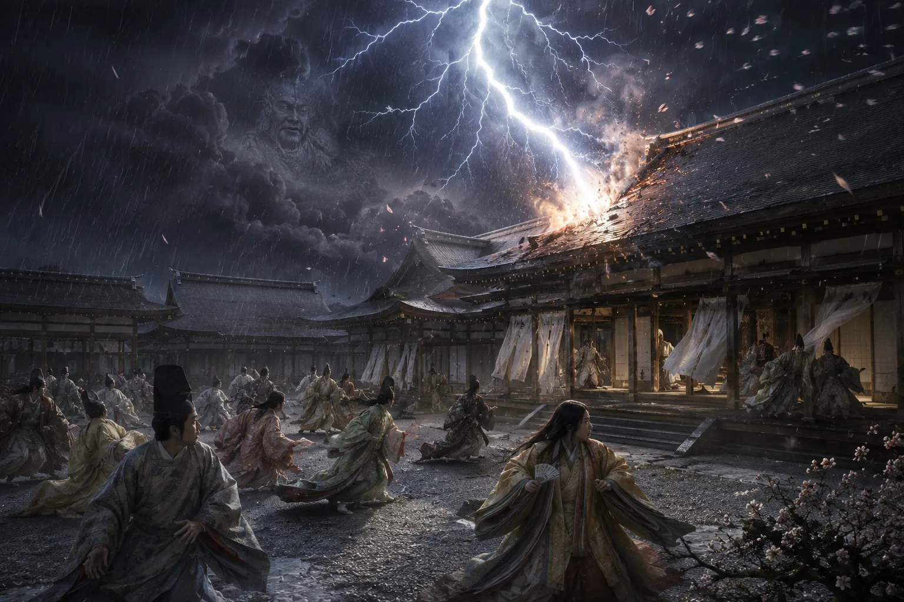
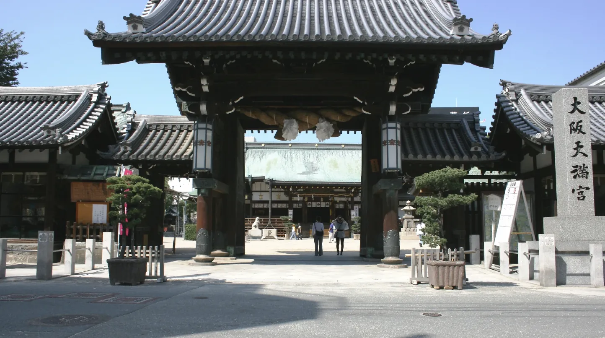
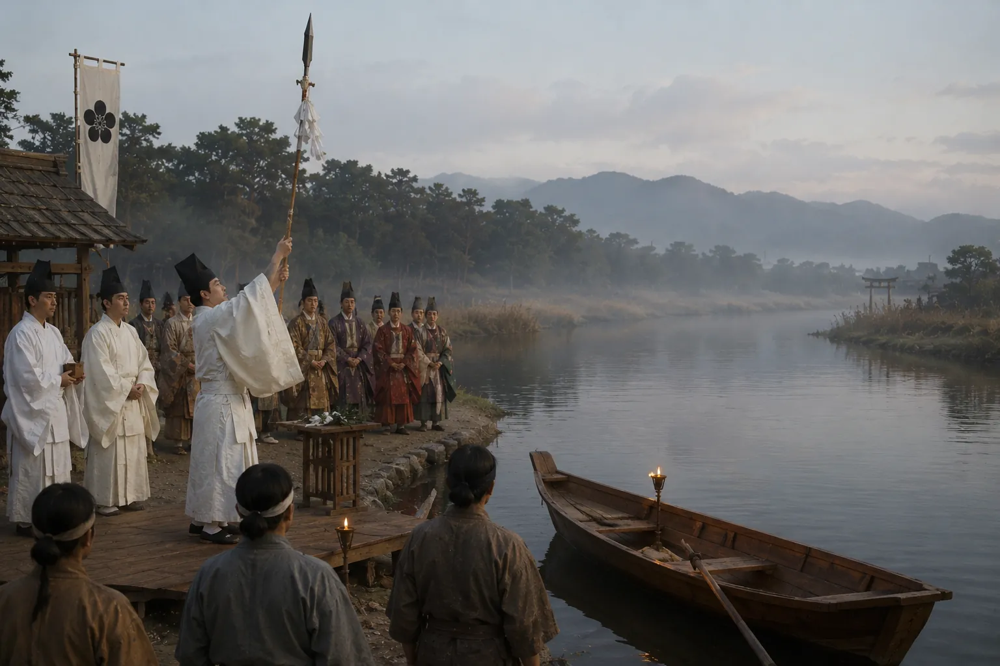
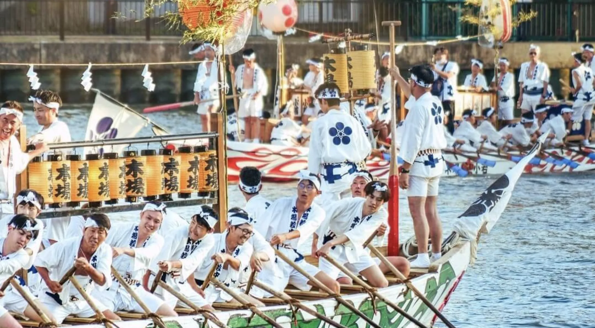

道真は幼少期から漢文学、詩、儒教哲学に並外れた才能を示しました。影響力が血筋だけに依存する多くの貴族とは異なり、彼の評価は学問と能力の上に築かれました。
この天才学者が有一天日本で最も広く崇拝される神の一人になることを想像できた者はほとんどいなかったでしょう。
若き学者としての菅原道真の芸術的イメージ。

大阪が日本最大の水上祭りを祝う理由
天神祭りは大阪の天満宮の祭りで、学問の神天神として神格化された学者政治家菅原道真を祀っています。951年に始まり、日本の三大祭りの一つに成長しました。
天神祭りは951年に大阪天満宮で始まりました。
菅原道真は平安時代の学者・詩人・政治家で、天神として神格化されました。
901年に宮廷内の政治闘争で藤原時平から告発され、流罪となりました。
この祭りは、死後に天神として神格化された菅原道真を祀るものです。
大川川は祭りの中心であり続けています。951年に最初の御神槍の儀式が行われ、今日の有名な船行列は同じ歴史的水路をたどっています。
はい。京都祇園祭、東京神田祭と並んで伝統的に認識されています。
| 初開催 | 951年 |
| 場所 | 大阪天満宮・大川川 |
| 祀る神 | 菅原道真（天神） |
| 祭りの種類 | 宗教的川祭り |
| 来場者数 | 年間100万人以上 |
| 認識 | 日本三大祭りの一つ |
若き学者としての菅原道真の芸術的イメージ。

優雅でありながら政治的に危険な平安宮廷の世界。

道真は京都を去り、最後の旅路につきました。

930年の落雷は天神伝説の重要な瞬間の一つとなりました。

日本各地の天満宮は学者として神になった人物を祀っています。

951年に確立された御神槍の儀式は、天神祭りの象徴的な始まりであり続けています。
大阪が日本の政治の中心地になっても天神祭りは続きました。

現代の船行列は千年以上にわたる伝統を引き継いでいます。
天神祭りは日本の最も古い祭りの一つである以上です。
それは何千年も遡る物語の最新章——川、政治、宗教、記憶、貿易、そして権力の物語です。
今日、大川川を船が滑るのを見ながら、あなたが見ているのは951年に御神槍を運んだ同じ水路、豊臣秀吉の大阪城を支え、日本最大の商人都市を維持し、日本が現代の名前を持つよりずっと前から定住を支えた水路です。
それらのつながりを理解することは、天神祭りを美しい夏の祭りから、大阪の注目すべき歴史の生きた表現へと変容させます。
これらの歴史リファレンスページは、大阪の過去の他の決定的な瞬間を探求し、私の研究をサポートします。
学校・大学向けの大阪歴史フィールドレッスンでは、先生が設定したテーマや問いをもとに、実際の歴史的景観を使って生徒と歴史を探究します。
学校向けフィールドレッスンを見る →研究：Edward Iftody、大阪在住歴史家・大阪城レジデントヒストリアン
この再構成は、同時代のヨーロッパ人の記録、日本の考古学研究、歴史地理、そして現存する物理的景観に基づいています。